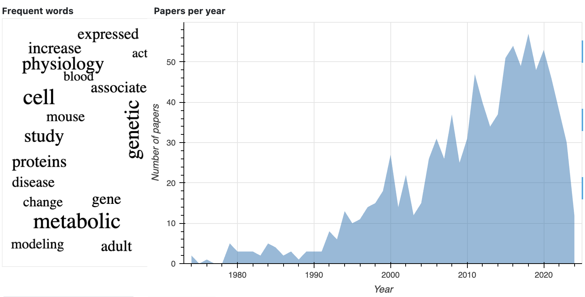

PubTrends
PubTrends is a powerful tool designed to help researchers navigate the ever-growing flow of scientific
publications.
It accelerates trend analysis and the discovery of breakthrough papers, offering a streamlined approach to
staying ahead in your field.
- Gain a concise overview of your research area.
- Explore popular trends and impactful publications.
- Discover new and promising research directions.
Datasets
- Pubmed 30 mln papers and 175 mln citations
- Semantic Scholar 170 mln papers and 600 mln citations
Workflow

Example
Here we describe the analysis for the predefined search query "human aging".
Papers
The Papers section offers a comprehensive overview of the field, featuring the total number of articles, extracted topics, and a word cloud of frequently used terms in titles and abstracts (clickable for accessing related documents). It also includes a yearly summary of published papers and an option to view papers in a list format.
Topics by Year
The Topics by Year plot displays the distribution of papers across different topics, highlighting the number of
papers for each topic annually.
Each topic is summarized with key keywords and its overall share of total papers.

Top Cited Papers
The Top Cited Papers plot offers an interactive visualization of the most-cited papers, categorized by citation count and type, with different colors representing various article types.
Hot Papers
The Hot Papers plot highlights the papers with the highest number of citations for each year.

Keywords
The Keywords Frequency plot displays the most common terms used in papers and their evolution over time.
You can hover over a keyword to see the exact number of papers in which it appears.

Network
Topics are closely related groups of documents. Aggregated graph and text embeddings are used to find similar
papers and detect topics.
Overall structure of topics within a research field can be visualised as a papers similarity graph.

Interactive Visualization
The displayed graph represents the overall structure of the research field, but the dedicated graph explorer
offers a more comprehensive experience.
It allows papers to be color-coded by year or topic and provides advanced search and filtering options using
available metadata.
In the screenshot, papers are color-coded by topic, with one paper highlighted along with its connected papers.

Topics
Topics are identified through hierarchical clustering of paper embeddings.
Users can explore the topic hierarchy using a dendrogram in a dedicated plot.

Topic Keywords
For each topic, the application displays a familiar word cloud and an articles plot.
The word cloud is generated using terms specific to the selected topic, highlighting their significance compared
to other topics.
The size of each word reflects its importance, based on the proportion of papers mentioning it.

Review
Generate a review for the chosen topic - a set of sentences from top cited papers with the highest probability to be included in a real review paper.

Materials
- Shpynov, O. and Kapralov, N., PubTrends: a scientific literature explorer. In Proceedings of the 12th ACM Conference on Bioinformatics, Computational Biology, and Health Informatics, 2021 (pp. 1-1). https://doi.org/10.1145/3459930.3469501
- Nikiforovskaya, A., Kapralov, N., Vlasova, A., Shpynov, O. and Shpilman, A., 2020, December. Automatic generation of reviews of scientific papers. In 2020 19th IEEE International Conference on Machine Learning and Applications (ICMLA) (pp. 314-319). IEEE. https://arxiv.org/abs/2010.04147
Code
Source code is available on GitHub at https://github.com/JetBrains-Research/PubTrends.